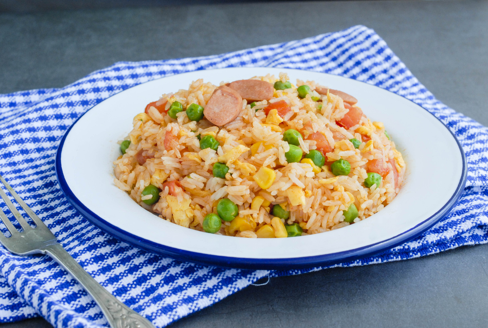

Fried Rice
Duration: 15min
Ingredients
- 3 cups leftover cooked and chilled white rice
- 2 large eggs
- 2/3 cup of baby carrots
- 1/2 cup frozen peas
- 1 tablespoon soy sauce
- 2 tablespoons vegatable oil
- 1 clove minced garlic (optional)
- 2 teaspoons sesame oil
Steps:
- Assemble ingredients.
-
Place carrots in a small saucepan and cover with water. Bring to a low
boil and cook for 3 to 5 minutes. Stir in peas, then immediately drain
in a colander.
-
Heat a wok over high heat. Pour in vegatable oil, then stir in
carrots, peas, and garlic; cook for about 30 seconds. Add eggs; stir
quickly to scramble eggs with vegetables.
-
Stir in cooked rice. Add soy sauce and toss rice to coat. Drizzle with
sesame oil and toss again.
- Serve hot and enjoy!
Home